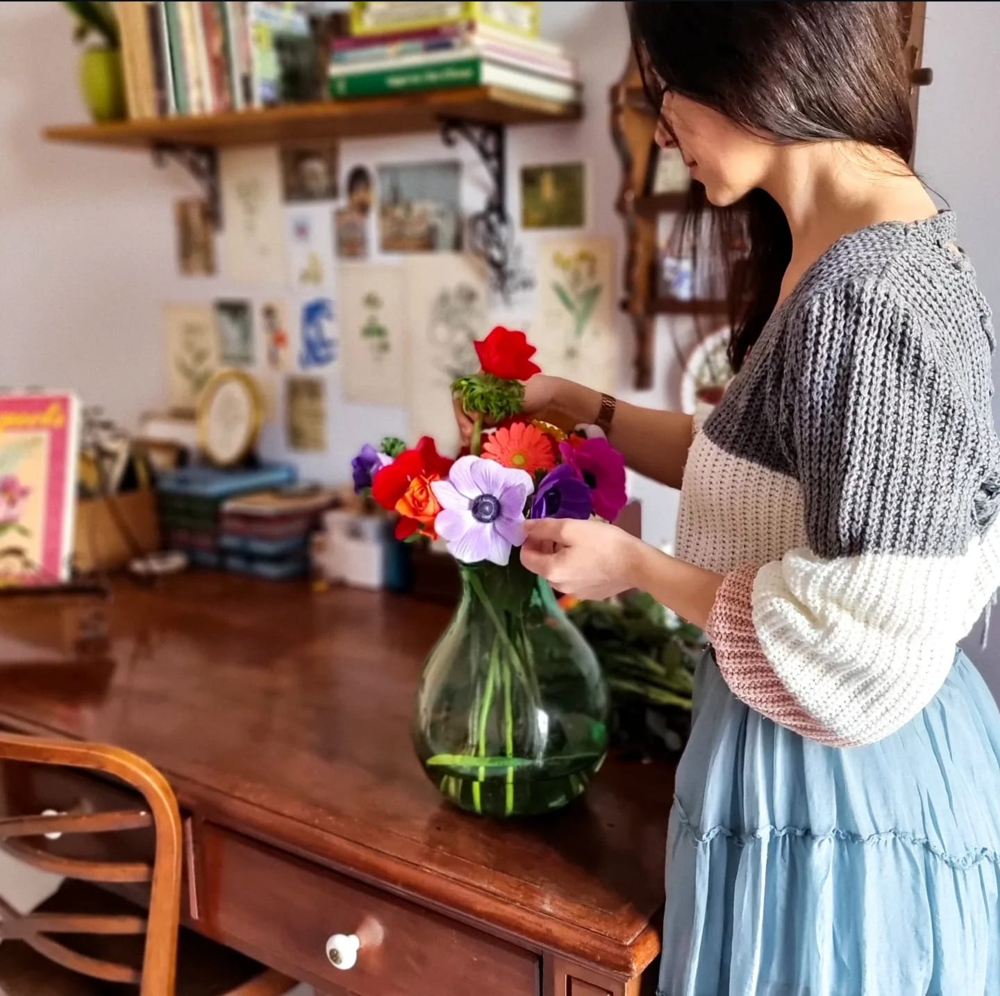
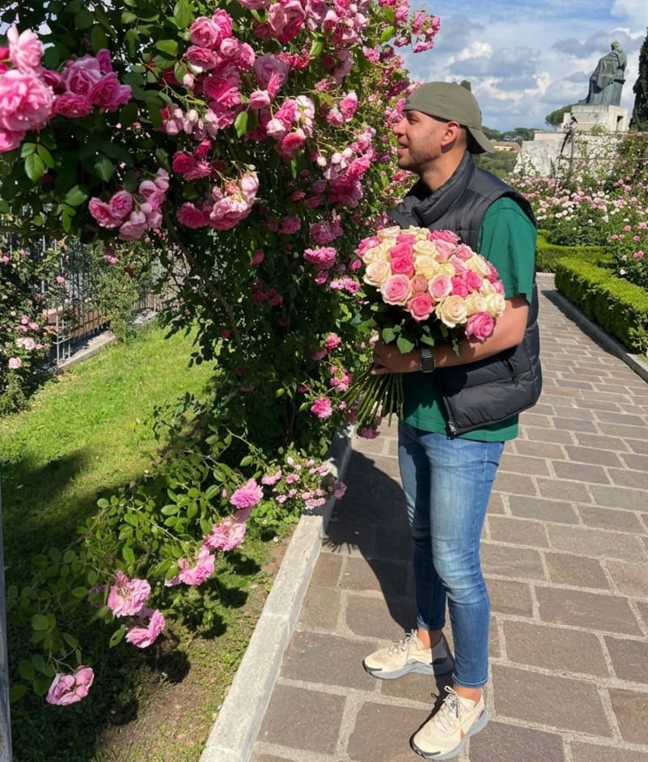

I fiori pressati sono un simbolo di bellezza che dura nel tempo. Possono includere una vasta gamma di varietà, come rose, lavanda, girasoli, e molte altre. La loro struttura delicata e i colori vivaci creano un aspetto unico e contemporaneo. Se sei affascinato dalla bellezza unica e dalla raffinatezza dei fiori pressati, sei nel posto giusto. La nostra collezione di immagini offre una varietà di stili e interpretazioni dei fiori pressati dal realismo dettagliato a composizioni più astratte che catturano l'aspetto poetico e romanttico. Esplora la nostra collezione online e lasciati ispirare dalla bellezza e dalla delicatezza dei quadri.
La nostra pagina web nasce per raccontarvi come trasformiamo fiori freschi, spesso carichi di ricordi, in quadri eterni.
L'arte dell'essiccazione: "Non solo fiori secchi, ma storie conservate. Raccontiamo il processo, dalla pressatura alla composizione finale, svelando i segreti per mantenere vivi i colori naturali anche dopo mesi. I binomio creativo: "Due anime, un unico quadro. Esploriamo insieme l'armonia tra colori tenui, forme naturali e l'arte botanica per creare pezzi unici e 'sostenibill."
Ciao come hobby mi diletto nella realizzazione di oggettistica utilizzando dei fiori pressati. Questa mia passione è nata alcuni anni fà, dopo aver ricevuto in regalo da una cara amica un libro sui fiori pressati. Successivamente ho affinato le diverse tecniche di pressatura del fiore, che mi hanno permesso di utilizzare fino a 50 tipi diversi di fiore. Oltre all'estetica della composizione, amo studiare il fiore sotto diversi aspetti, come il suo significato e il suo potere "magico".
La Filosofia "Sostenibile": Sottolineare che i fiori secchi sono una decorazione ecologica che dura nel tempo senza bisogno di acqua. 3. Frasi a Effetto per il Blog Cagline). "Fiori eterni, quadri da vivere. "L'arte che non appassisce." . "Due cuori, una pressa: la bellezza della natura in cornice." "Conserviamo la bellezza del fiore anche dopo che è sfiorito." 4. Idee per il Lancio di una Creazione "Oggi vi mostriamo come un bouquet di nozze si è trasforato in un ricordo eterno." "Le rose di maggio, pressate e inquadrate per illuminare l'inverno." "Il risultato del nostro ultimo esperimento botanico: tecniche di pressatura a confronto."


Scrivici, ti risponderemo al più presto!
Contattaci per commissioni personalizzate o per saperne di più sui nostri quadri.